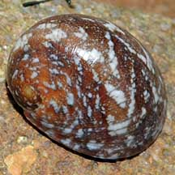
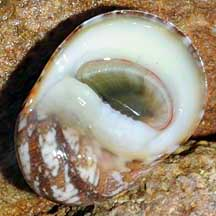
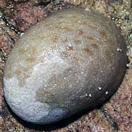
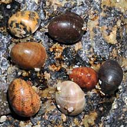
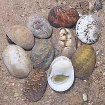
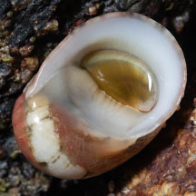

|
|
| shelled snails text index | photo index |
| Phylum Mollusca > Class Gastropoda > Family Neritidae |
| Polished
nerite snail Nerita polita Family Neritidae updated Sep 2020 Where seen?This nerite snail with a smooth shell is sometimes seen on our Southern shores, on rocky shores often near the high water mark. The study by Tan & Clements (2008) found this snail on intertidal rocks. They observed that the snail is nocturnal in habit and frequently found shallowly buried in sand against base of rocks during the day. Sites included: Changi, Sungei Bedok, Sentosa, St. John's Island, Tuas and Labrador. Features: 3-4cm. Shell very thick and spherical, the spire doesn't stick out. Outer texture smooth without ribs, though not always glossy. Shell colour and pattern varies widely. The flat underside white, smooth and glossy, sometimes slightly wrinkled. Tiny notched 'teeth' on the straight edge at the shell opening, the uppermost one is squarish. Operculum thick, greenish grey smooth except for a border of fine bars at the edge. Body pale with fine black bands. |
 Labrador, Jun 08 |
 Labrador, Jan 08 |
 Not all have glossy shells. Sentosa, May 08 |
 Labrador, Jan 09 |
 Sentosa, Dec 10 |
| Human uses: In some places it is prized as food and for its attractive shell. |
| Polished nerite snails on Singapore shores |
On wildsingapore
flickr
|
| Other sightings on Singapore shores |
 |
Links
|